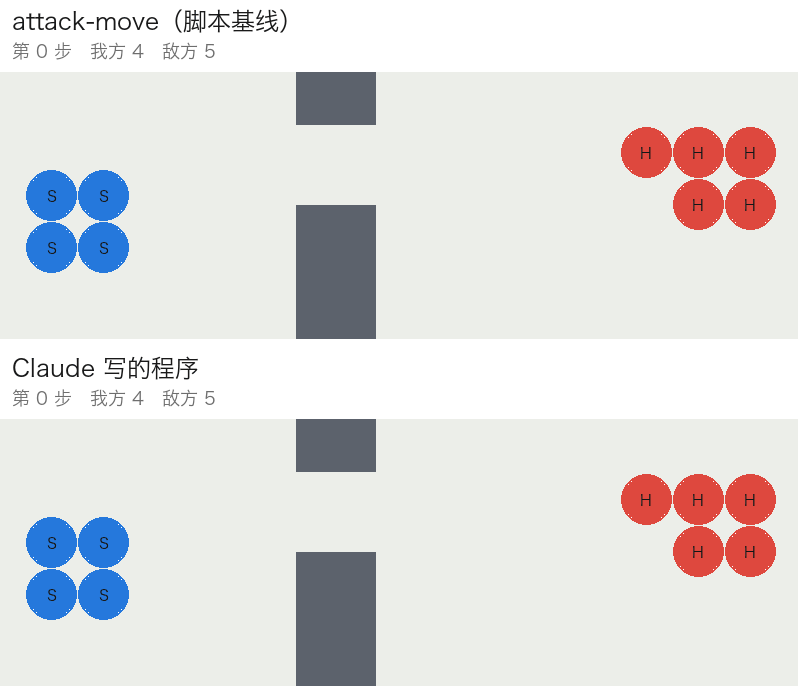

从选单位动作到在系统上挑选：四步实验
每个问题的判据都一样：Jev 必须显著赢过"同样信息、没有 Jev"的对照。
官方图：23 张 SMAC 图 × 5 个种子 = 115 局。第 2 步的题目和手写规则都照着它们写，所以对它们是样本内。
生成的战斗：一个场景 = 随机抽的地形 + 双方兵种组合 + 时限，只留有争议的战斗。一个种子 = 同一场战斗重打，出生点抖动不超过 1.5 格。
| 角色 | 集合 | 场景 | 局（× 5 种子） |
|---|---|---|---|
| 训练 | train、train2 | 60 + 120 | 900 |
| 验证 | val | 80 | 400 |
| 测试 | test、test2 | 40、120 | 200、600 |
| 测试 | test3–test6 | 各 200 | 各 1,000 |
每个测试集只用来做一次最终判断。不同集合是不同的战斗，不只是种子不同。1,040 个验证和测试场景里，只有 4 个碰巧和训练场景相同。
交给它的是可选的选项和一些知识（说明、示例）。选项都合法：Jev 只在第一行的集合里选，随机对照也在同一集合里选。
| 角色 | 排除的是 | 第 1 步：选单位动作 | 第 2–3 步：选兵组战术 | 第 4 步：在系统上挑选 |
|---|---|---|---|---|
| Jev | 被检验的对象 | Jev，逐单位动作每个单位此刻的合法动作，6–17 个 | Jev 作答每道考题列出的选项，都能执行 | Jev 挑系统给的几个候选 |
| 下限 | 系统本身就不行 | attack-move所有单位向敌人攻击移动 | attack-move | 系统默认Jev 不插手；图里的 0 线 |
| 随机 | 收益来自选项本身 | 随机合法动作同样的合法动作里随机（不含原地不动） | 随机作答同样的题，同样的选项里随机选 | 随机挑在同样的候选里随机挑 |
| 固定规则 | 收益来自规则里的知识 | SMAC：closest SMAC：focus打射程内最近 / 血最少的敌人 | 手写规则4 条固定选择，照官方图写 | 示例投票Jev 拿到的同样示例，直接投票 |
| 学习 | 用模拟器训练就学得到 | – 没跑：Jev 连下限都没赢 | 价值切换每 5 步从 12 个战术里选，训练见下 | – （⑤ 叠加在它上面） |
| 上限 | 本来就没有空间 | – 同上 | 事后最优每个选项都打一遍，取最好 | 事后最优 |
价值切换怎么训练（只在离线复制模拟器状态）：约 1.1 万个决策点，每点把 13 个选项（12 个战术 + 不换）各打 5 步、再由基准策略打到底，共约 14 万次回放，得到标签；梯度提升树学"换成某个战术比不换好多少"；两轮 DAgger 在模型自己走到的局面上补标签。
3m（种子 1）：Jev 让三个机枪兵一起往东走（P = 0.95），然后把火力分散到三个敌人身上。敌人不分散，最后剩 2 个单位获胜。
还慢：这个规模下每次请求 1.23 秒，比一步的 0.5 秒还长。
Jev 对随机作答 +17 / −0；对手写规则 +1 / −2；对价值切换 +41 / −1。
Jev 对随机作答 +37 / −30（p = 0.46）；对手写规则 +20 / −20；对 SMAC：focus +66 / −63（p = 0.86）；对价值切换 +45 / −39（p = 0.59，价值切换的阈值是在 val 上选的）。
7 道题：枪线怎么打、近战怎么打、集火规则、激光瞄哪、外侧是否让位、两个残血敌人先打谁、治疗谁。平均每局 10.5 次请求。
上限 = 把每个选项钉住整场重打一遍，每局取事后最好的那个。虚线框是上限。
官方图上排名反过来：这些系统只有 51–65 / 115，Jev 作答 91。官方图对第 2 步是样本内，第 4 步的系统从没见过它们。
| 系统 | 训练 | 验证 | 测试（只用一次） |
|---|---|---|---|
| 战术库 + 最近簇 LLM 按场景簇锻造程序，换种子确认才入库 | train | – | test2：299 对 255 / 600 |
| 价值切换 每 5 步，价值模型可换成 12 个战术之一 | train + train2 | val 选阈值 | test3：496 对 452 / 1,000 |
| Grok 写的程序 4 轮模拟器反馈 | train | val | test5：584 对 443 / 1,000 |
| Claude 写的程序 读源码、逐局追踪输局 | train + train2 | val | test6：720 对 475 / 1,000 |
"对"后面是 attack-move 在同一批战斗上的胜场。
挑选是上限（事后最好的选项），执行是实际测到的差值，所以这张图对挑选是偏宽的。

没见过的测试战斗：4 个追猎者（蓝）对 5 个刺蛇（红），墙上只有一个缺口。
上：attack-move，火力分散，全灭。
下：Claude 写的程序，守住缺口、逐个集火，一个不死。
写程序→模拟器→只看汇总分数↺
写程序→模拟器→源码 + 逐局追踪 + 配对重测↺
最大一次跃升：发现 can_attack 是"可见"，不是"在射程内"（−100 → +64 / 720）。
和随机合法动作一样；attack-move 赢 25。
官方图 91 对 92；新战斗 196 对 196，也和 SMAC：focus（193）打平。
四个实验里最好 +6，示例投票 +5。
每个决策点问"从这里能赢吗"，附 8 个最相似的历史时刻。AUC 条从 0.5（瞎猜）画起。Jev 最好，但不显著。而且微操里没有能用上这个判断的动作：不能撤退、增援、投降。
少量、高代价、能用文字描述的决策，而且判断能变成动作：撤退、增援、这仗不打。全局宏观运营符合这些条件；小规模微操正好相反。
外部结果（JEV-Star，实时星际 2 宏观）：Jev 单独 0 / 10；在 LLM 计划过滤后的动作里挑，9 / 10。
在一部分种子上为每个场景挑最好的选项，再到别的种子上验证。如果只值几个百分点，谁来挑都无所谓。这里"等还是压"的上限只有 3.5%。
四种对照：随机挑、示例投票、手写规则、系统默认。Jev 在每一步都被其中一个追平。
一个改动在挑选种子上 +7，换了种子变成 −14（p = 0.049）。小于 +15 的提升，一定要在没参与挑选的种子上再测。
手写规则和 Jev 的题目都照着官方图写：在那里 92 和 91，到了新战斗就和 SMAC：focus 打平。泛化只看没见过的战斗。
完整数据和复现命令：README 与 results/rerun/。
// 第二步的真实请求（官方图 1c3s5z，第 9 步；节选） { "state": { "objective": { "win": "Wipe every enemy before the tick limit.", … }, "tick": "9/180", "our_force": { "alive": 8, "by_kind": { "stalker": 3, … }, … }, "enemy_force": { "alive": 8, … }, "situation": "Enemy melee is already in blade range of our blob. If we stand 0.5s to fire, melee will reach us. …", "physics": { "speed": "even", "reach": "we_outrange", "contact": "melee_on_us", "hp_trend": "trading", … }, "lines": { "ranged": {…}, "melee": {…} }, "recent": [ "t=8 ranged=stack melee=charge … A[U0:200,…] E[E4:3,…]", … ] }, "questions": { "target": { "type": "choice", "instructions": "Which targeting rule should the army use this tick? Code focuses fire on the enemy that rule selects.", "criteria": { "frontline": { "rule": "Focus the nearest …", "picks": "E8", … }, "weakest_in_range": { "rule": "Focus the lowest-hp …", "picks": "E5", … }, "guns": { "rule": "Focus an enemy ranged …", "picks": "E2", "kind": "stalker", "remaining_ehp": 142, … }, … } }, "bar": { … } } } // 回答：{"answers": {"target": {"choice": "guns", "probabilities": {…}}}}
只问 7 类有证据的题，局势变了才重问，平均每局 10 次左右。选项附上它会打谁、对方剩多少血；Jev 不选方向，执行全在代码里。
第一步：每个单位一道题，选项是它的合法动作，如 "Fire now on zea E3 (hp 80, d=4.2). Legal shot."、"Walk E. CLOSER to nearest enemy E2."。
第四步：选项换成程序或宏动作，附上它在 8 场相似战斗里的战绩。
| 场景 | 谁在驱动 | 决策点 |
|---|---|---|
| train · 60 个 × 5 种子 | 最近簇程序 | 2,717 |
| 价值策略自己（DAgger） | 2,773 | |
| train2 · 120 个，种子 1–3 | 最近簇程序 | 3,484 |
| train2 · 种子 4–5 | 价值策略自己（DAgger） | 2,143 |
四批数据合在一起训练最终模型；DAgger 两批约占一半。
# 节选自 kb/library/code/general_claude.py（注释译成中文） def in_range(u, e, slack=0.3): # can_attack 只说明"看得见"；射程要自己算 return can_attack(u, e) and dist(u, e) <= u.range + u.radius + e.radius + slack def threat(e, A): # 敌人每秒能打掉我们多少血 … # 医疗艇、自爆兵另算 cd = e.max_cooldown if e.max_cooldown > 0 else 1.0 return e.damage * e.attacks / cd # 集火分配：这一步能开火、且射程内有目标的单位 ready = [u for u in A if u.cooldown < READY and u.id not in out] opts = {u.id: [e for e in E if in_range(u, e)] for u in ready} ready.sort(key=lambda u: (len(opts[u.id]), -u.damage)) # 选择少的先挑 for u in ready: for e in opts[u.id]: left = ehp(e) - claimed.get(e.id, 0) # 扣掉队友已经认领的伤害 h = hit(u, e) # 护甲、克制加成都算进去 if left <= 0: k = (1, -th[e.id] / ehp(e)) # 会溢出：排到最后 else: k = (0, -th[e.id] / max(left, h) * (1.5 if h >= left else 1)) … # 取 k 最小的 e；能补刀的加权 1.5 out[u.id] = attack(u, best) claimed[best.id] += hit(u, best) # 僵持：10 步没人掉血就全军进攻（超时算输） if mem['quiet'] >= STALL_STEPS: …
程序没下令的单位交给原来的默认策略。写法：读模拟器源码，逐步追踪输局，每次只改一处，在 train 上配对重测。